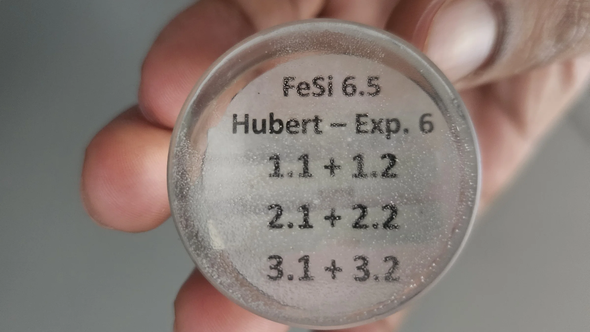

Hubert Antony
M.Sc. Mechanical Engineer — Metal Additive Manufacturing
Laser Powder Bed Fusion (PBF-LB/M) · Process Development · Materials Characterisation
Sa 4.55 → 1.8 µm
full density, held across the window
CAD and CAE platforms
Executive summary
I started out sketching cars. An automotive styling bootcamp, a winning concept vehicle, then a mechanical engineering degree and two industry roles in Chennai, India: teaching CAD to more than a hundred engineers, and running CNC machines. The same question followed me through all of it. Can this actually be made?
That question led me to metal 3D printing. For my Master's in Germany I took on FeSi6.5, an alloy that would make electric motors measurably more efficient, except that it shatters under a rolling mill, so industry leaves it alone. I built a laser process that made printed parts around 60% smoother while keeping them fully dense, and found that repeating the laser pass at chosen intervals lets you set the metal's internal grain structure deliberately. The work was published in Procedia CIRP. Along the way I redesigned part of the machine itself.
I am looking for a team where I can keep doing that: take a process nobody has made repeatable, and make it repeatable.
What I deliver to an engineering team
Featured projects
Three projects, each taken from problem statement through method to quantified result.

Master's Thesis · Process development
In-process laser remelting for FeSi6.5 soft magnetic components
A conduction-regime remelting strategy that smooths layer topography and converts columnar grains to equiaxed — without embrittling a notoriously brittle alloy.
~60% smoother · published 2024 →

Machine development · CFD
Inlet gas circulation system for a PBF-LB/M research machine
Designed, simulated, manufactured and integrated: active spatter evacuation plus build platform heating for thermally controlled precision.
CAD → CFD → built → validated →

B.E. thesis · Taguchi DoE
Porosity minimisation in laser-sintered cobalt-chromium for medical implants
Nine runs instead of twenty-seven. Mapped a tenfold porosity spread and identified which parameter actually governs it.
2.8% vs 27.06% · scan speed dominant →
Two more on the Projects page: a thermal characterisation study on printed aluminium for aerospace, and a camera mount I designed and built because the lab needed one.